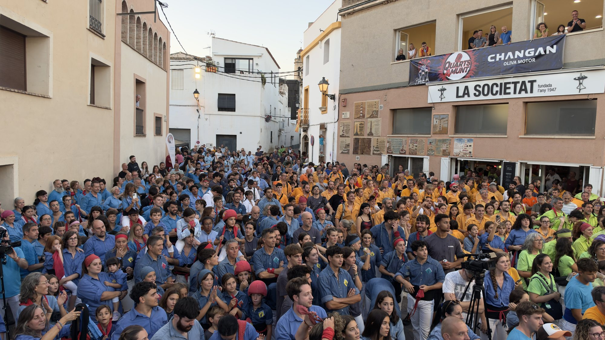
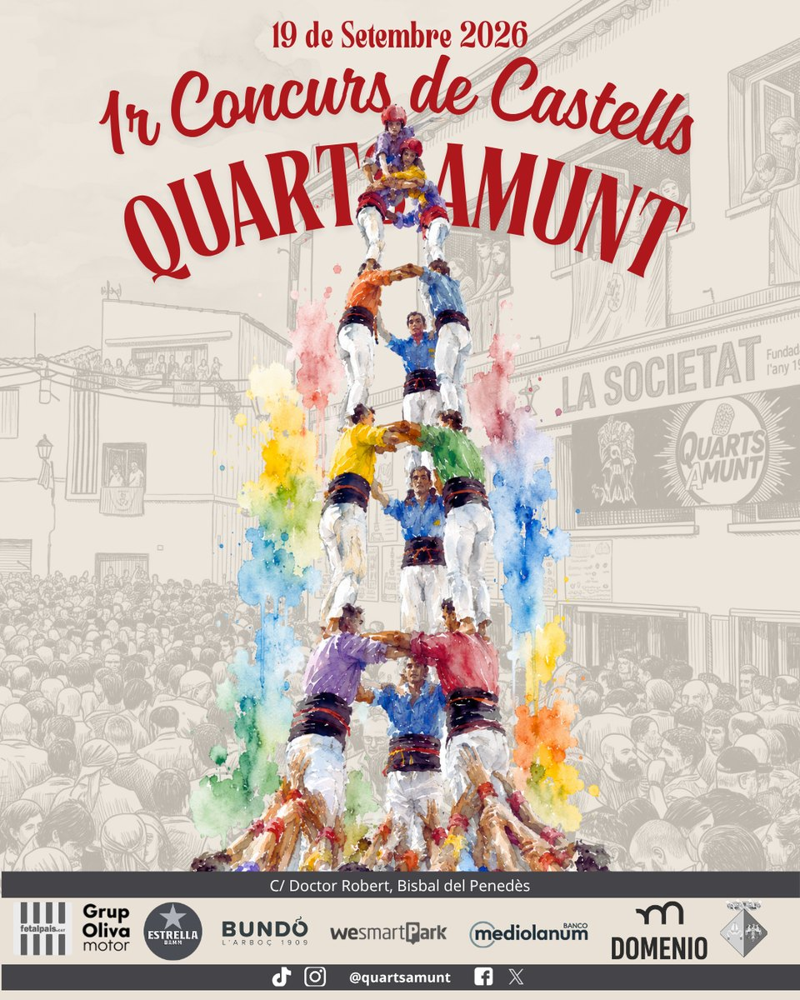
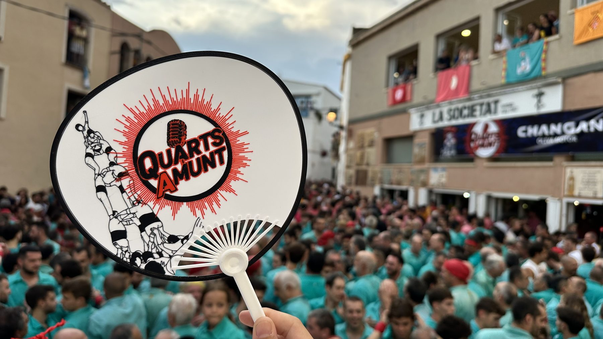
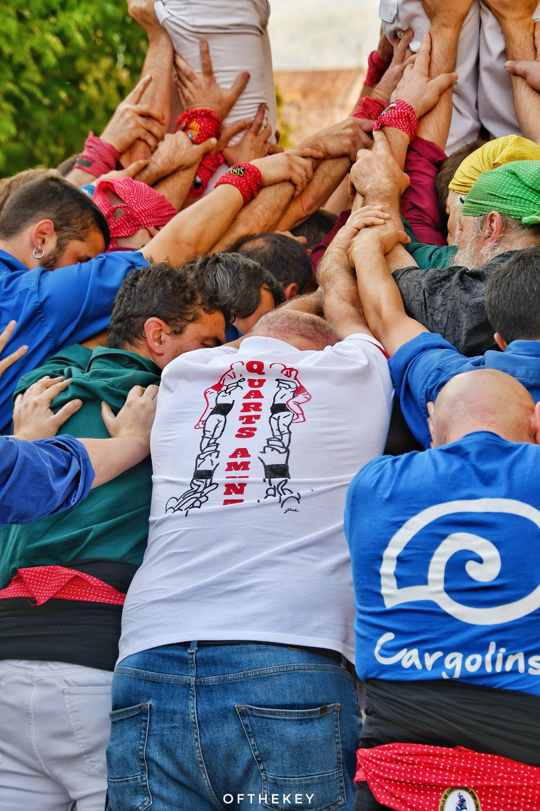

Va ser increïble. Sis colles a plaça, la grada plena i una tarda que es va allargar fins que no hi va cabre ni un castell més.
Per a algunes colles va ser la millor diada de la seva història. Gràcies a totes per venir, i a la Bisbal del Penedès per acollir-nos.

El carrer del Doctor Robert, el 19 de setembre.
Els tres castells que van puntuar de cada colla, segons la taula oficial del concurs.
Només compten els tres castells de millor puntuació de cada colla. Més avall hi ha tot el que es va fer a plaça, intents inclosos.
Els castells de cada colla per ordre de ronda, amb els intents. Marcats en vermell, els tres que van puntuar.
Com es llegeix: a = amb l'agulla · c = carregat · id = intent desmuntat. Els castells sense marca es van descarregar.

Sis colles, dos grups, dos jurats i premi per a tothom qui pugi a plaça. Després, sopar popular i festa fins a les tres de la matinada.
El món casteller està més viu que mai, amb una infinitat de colles repartides arreu. Però el calendari competitiu no ha crescut al mateix ritme. A les jornades de Torredembarra s'hi accedeix per classificació, i les colles que no hi tenen plaça es queden sense cap espai on competir. Aquesta jornada existeix per a elles.
Ningú no ha de triar: a Torredembarra s'hi entra per ordre de classificació. Si hi tens plaça, hi vas. Si no, fins ara no tenies res. Nosaltres afegim una quarta jornada, no en substituïm cap.
Competir de veritat, però en un ambient de solidaritat i cooperació entre colles. Aquell esperit que feia que ningú marxés de la plaça amb mal gust de boca.
Castells sí, competició també — i festa. Perquè una jornada castellera no s'acaba amb l'últim castell.
L'horari de la diada, tal com va sortir al protocol del concurs.
Arribada de les colles i sorteig de l'ordre d'actuació.
Les colles entren segons el rànquing de la classificació.
Cinc rondes de castells. Hora límit prevista de finalització: les 21.00 h.
Totes les colles fan junts el pilar d'acomiadament i tot seguit es lliuren els premis.
Quan s'acaben els castells, el poble surt al carrer amb la seva cultura popular.
Tots a taula, colles i públic. 12 € per a les colles castelleres, 15 € general.
Obre la nit fins a les 23 h.
La festa grossa de la nit.
Fins al tancament, cap a les 3 de la matinada.
Competitiu en la puntuació, cooperatiu a la plaça. Aquí tens el resum; el detall complet és al protocol.
Les sis colles es reparteixen segons la classificació prèvia: el Grup 1 amb les posicions 1, 2 i 3, i el Grup 2 amb la 4, la 5 i la 6.
A les tres primeres, cada colla fa una construcció. La quarta i la cinquena són rondes de millora: només serveixen per intentar millorar la puntuació d'un castell ja executat, no per repetir-ne cap altre.
La classificació surt dels tres castells de millor puntuació de cada colla, segons la taula oficial. En cas d'empat mana la penalització per temps.
No hi ha ningú que hi vagi per res. La colla guanyadora s'endú 1.000 €, i a partir d'aquí la quantia baixa de 100 € en 100 € fins als 500 € de la sisena. Cap colla marxa amb les mans buides.
Perquè si has fet l'esforç de venir, muntar i competir, això s'ha de reconèixer. I com que sense gralles no hi ha castell, hi ha un jurat de gralles i premi per al millor grup.
A la Bisbal del Penedès. Un carrer de festa major de tota la vida — dels que fan que un castell es vegi encara més gran.

Hi van competir sis colles, dividides en dos grups. Cap d'elles va haver d'inscriure-s'hi ni de triar: a les jornades de Torredembarra s'hi accedeix per ordre de classificació, i les colles que hi queden fora són les que van competir aquí.
Reglament complet: horari, format d'actuació, funcionament dels torns, temps i penalitzacions, jurats, dispositiu sanitari, classificació, premis i la taula oficial de puntuacions.
Quan es van acabar els castells, tots a taula. Colles i públic, al mateix lloc.
Perquè una jornada castellera no s'acaba amb l'últim castell.
So i il·luminació a càrrec de Parejo Sound
Tot el material, ordenat per colla. Filtra la teva, mira-ho i descarrega't el que vulguis.
Anar a la galeria

.png)